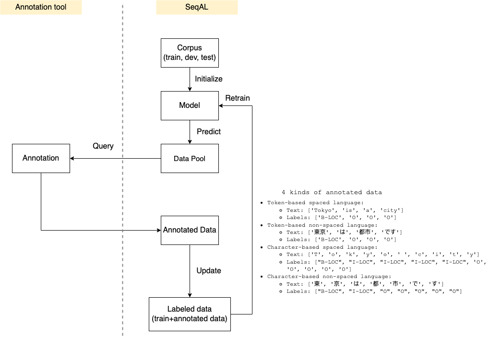

Annotated Data
This tutorial shows how to receive the labeled data.

The annotated data could have 4 kinds of format. Next we will demonstrate how to process different annotated data.
Token-based Annotated Data
Token-based annotated data means one token has one label.
Example of spaced language:
Example of non-spaced language:
For such annotated data, we can use Aligner.add_tags_on_token() to process it.
# 1~7 steps can be found in Introduction
# initialize Aligner
aligner = Aligner()
# 8. iteration
for i in range(iterations):
# 9. query unlabeled sentences
queried_samples, unlabeled_sentences = learner.query(
unlabeled_sentences, query_number, token_based=token_based, research_mode=False
)
# 10. annotate data
annotated_data = human_annotate(queried_samples)
# 11. retrain model with newly added queried_samples
queried_samples = aligner.add_tags_on_token(annotated_data)
learner.teach(queried_samples, dir_path=f"output/retrain_{i}")
In step 10, it receive the annotated data.
In step 11, Aligner.add_tags_on_token() convert annotated data to the format that could be added to training data.
The detail of spaced language and non-spaced language can be found in TUTORIAL_2_Prepare_Corpus.
Character-based Annotated Data
Token-based annotated data means one character has one label.
Character-based Spaced Language
Example of character-based spaced language.
[
{
"text": ['T', 'o', 'k', 'y', 'o', ' ', 'c', 'i', 't', 'y'],
"labels": ["B-LOC", "I-LOC", "I-LOC", "I-LOC", "I-LOC", 'O', 'O', 'O', 'O', 'O']
},
]
For such annotated data, we can use Aligner.add_tags_on_char_spaced_language() to process it.
# 1~7 steps can be found in Introduction
# initialize Aligner
aligner = Aligner()
# 8. iteration
for i in range(iterations):
# 9. query unlabeled sentences
queried_samples, unlabeled_sentences = learner.query(
unlabeled_sentences, query_number, token_based=token_based, research_mode=False
)
# 10. annotate data
annotated_data = human_annotate(queried_samples)
# 11. retrain model with newly added queried_samples
queried_samples = aligner.add_tags_on_char_spaced_language(annotated_data, input_schema="BIO", output_schema="BIO", tag_type="ner")
learner.teach(queried_samples, dir_path=f"output/retrain_{i}")
In step 11, Aligner.add_tags_on_char_spaced_language() convert annotated data to the format that could be added to training data.
The parameters:
- annotated_data: A list of labeled data.
- input_schema: The schema of input tags. It supports "BIO", "BILOU", "BIOES".
- output_schema: The schema of output tags. It supports "BIO", "BIOES". Because Flair only support "BIO" and "BIOES", we output these two kind of schema.
- tag_type: The tag type. It can be "ner", "pos" and so on.
Character-based Non-spaced Language
Example of character-based non-spaced language.
[
{
"text": ['東', '京', 'は', '都', '市', 'で', 'す'],
"labels": ["B-LOC", "I-LOC", "O", "O", "O", "O", "O"]
}
]
For such annotated data, we can use Aligner.add_tags_on_char_non_spaced_language() to process it.
# 1~7 steps can be found in Introduction
# initialize Aligner
aligner = Aligner()
nlp = spacy.load("ja_core_news_sm")
# 8. iteration
for i in range(iterations):
# 9. query unlabeled sentences
queried_samples, unlabeled_sentences = learner.query(
unlabeled_sentences, query_number, token_based=token_based, research_mode=False
)
# 10. annotate data
annotated_data = human_annotate(queried_samples)
# 11. retrain model with newly added queried_samples
queried_samples = aligner.add_tags_on_char_non_spaced_language(annotated_data, input_schema="BIO", output_schema="BIO", tag_type="ner", spacy_model=nlp)
learner.teach(queried_samples, dir_path=f"output/retrain_{i}")
Different from spaced language, we have to tokenize non-spaced language. For example, we tokenize "ロンドンは都市です" to ["ロンドン"は", "都市", "です"].
We should download the spacy model beforehand as the tokenizer. We can find different language's spacy model in spacy models.
The parameters:
- annotated_data: A list of labeled data.
- input_schema: The schema of input tags. It supports "BIO", "BILOU", "BIOES".
- output_schema: The schema of output tags. It supports "BIO", "BIOES". Because Flair only support "BIO" and "BIOES", we output these two kind of schema.
- tag_type: The tag type. It can be "ner", "pos" and so on.
- spacy_model: The spacy language model.